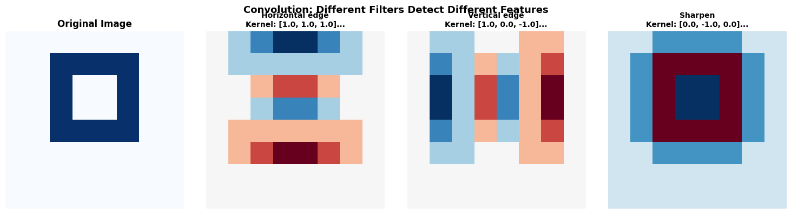
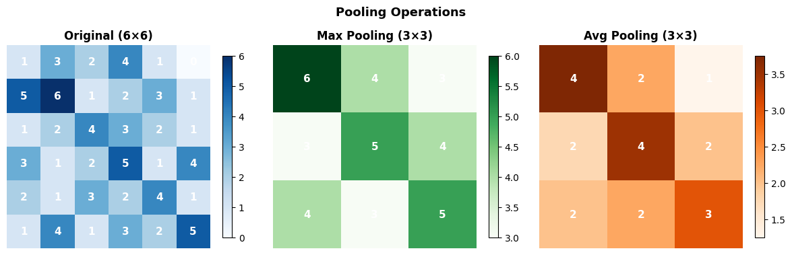
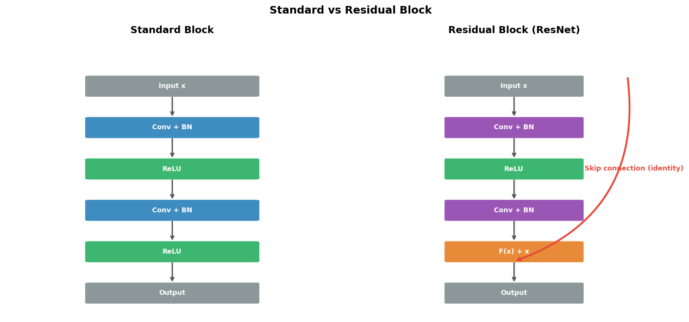

How do CNNs understand images?#
Topics: Convolution · Pooling · Feature Maps · Receptive Field · Classic Architectures (LeNet · VGG · ResNet · Skip Connections)
1. Convolution Operation#
What it is#
Slides a small filter (kernel) across the image, computing dot products at each position
Each filter detects a specific pattern (edge, texture, shape)
Output is a feature map — one per filter
Key parameters#
Kernel size — 3×3 most common, larger = wider pattern detection
Stride — how many pixels the filter moves each step
Padding — adds zeros around input to control output size
same padding → output same size as input
valid padding → output shrinks
Key intuition#
One filter = one feature detector (e.g. horizontal edge)
Many filters = detect many features simultaneously
Deep layers = combine simple features into complex ones
import numpy as np
import matplotlib.pyplot as plt
# ── Manual convolution ──
def convolve2d(image, kernel, stride=1, padding=0):
if padding > 0:
image = np.pad(image, padding, mode='constant')
kH, kW = kernel.shape
H, W = image.shape
out_H = (H - kH) // stride + 1
out_W = (W - kW) // stride + 1
output = np.zeros((out_H, out_W))
for i in range(0, out_H):
for j in range(0, out_W):
output[i, j] = (image[i*stride:i*stride+kH,
j*stride:j*stride+kW] * kernel).sum()
return output
# Sample 8x8 image
image = np.array([
[0,0,0,0,0,0,0,0],
[0,0,1,1,1,1,0,0],
[0,0,1,0,0,1,0,0],
[0,0,1,0,0,1,0,0],
[0,0,1,1,1,1,0,0],
[0,0,0,0,0,0,0,0],
[0,0,0,0,0,0,0,0],
[0,0,0,0,0,0,0,0],
], dtype=float)
kernels = {
'Horizontal edge': np.array([[ 1, 1, 1],[ 0, 0, 0],[-1,-1,-1]], dtype=float),
'Vertical edge' : np.array([[ 1, 0,-1],[ 1, 0,-1],[ 1, 0,-1]], dtype=float),
'Sharpen' : np.array([[ 0,-1, 0],[-1, 5,-1],[ 0,-1, 0]], dtype=float),
}
fig, axes = plt.subplots(1, 4, figsize=(15, 4))
axes[0].imshow(image, cmap='Blues')
axes[0].set_title('Original Image', fontsize=12, fontweight='bold')
axes[0].axis('off')
for ax, (name, kernel) in zip(axes[1:], kernels.items()):
fmap = convolve2d(image, kernel, padding=1)
ax.imshow(fmap, cmap='RdBu_r')
ax.set_title(f'{name}\nKernel: {kernel[0].tolist()}...', fontsize=10, fontweight='bold')
ax.axis('off')
plt.suptitle('Convolution: Different Filters Detect Different Features', fontsize=13, fontweight='bold')
plt.tight_layout()
plt.savefig('convolution.png', dpi=120, bbox_inches='tight')
plt.show()

Interview Q&A#
Why use 3×3 kernels instead of larger ones?
Two 3×3 conv layers have the same receptive field as one 5×5, but fewer parameters and more non-linearity
VGG showed stacking 3×3 kernels outperforms larger kernels
What is a 1×1 convolution?
Combines feature maps across channels without spatial mixing
Used to change number of channels (dimensionality reduction) cheaply — used in ResNet, Inception
Gotchas#
Output size = (input + 2×padding - kernel) / stride + 1
More filters = more parameters = richer features but slower training
2. Pooling#
What it is#
Downsamples feature maps by summarizing regions
Reduces spatial dimensions → fewer parameters → translation invariance
Types#
Type |
Operation |
Use |
|---|---|---|
Max pooling |
Take maximum in each region |
Most common — preserves strongest activation |
Average pooling |
Take mean in each region |
Global average pooling before classifier |
Global avg pool |
Average entire feature map to scalar |
Replaces flatten in modern CNNs |
Key intuition#
Max pooling: “was this feature detected anywhere in this region?”
Provides translation invariance — feature detected slightly off-center still activates
import numpy as np
import matplotlib.pyplot as plt
def max_pool(x, pool_size=2, stride=2):
H, W = x.shape
out_H = (H - pool_size) // stride + 1
out_W = (W - pool_size) // stride + 1
out = np.zeros((out_H, out_W))
for i in range(out_H):
for j in range(out_W):
out[i,j] = x[i*stride:i*stride+pool_size,
j*stride:j*stride+pool_size].max()
return out
def avg_pool(x, pool_size=2, stride=2):
H, W = x.shape
out_H = (H - pool_size) // stride + 1
out_W = (W - pool_size) // stride + 1
out = np.zeros((out_H, out_W))
for i in range(out_H):
for j in range(out_W):
out[i,j] = x[i*stride:i*stride+pool_size,
j*stride:j*stride+pool_size].mean()
return out
feature_map = np.array([
[1, 3, 2, 4, 1, 0],
[5, 6, 1, 2, 3, 1],
[1, 2, 4, 3, 2, 1],
[3, 1, 2, 5, 1, 4],
[2, 1, 3, 2, 4, 1],
[1, 4, 1, 3, 2, 5],
], dtype=float)
max_pooled = max_pool(feature_map)
avg_pooled = avg_pool(feature_map)
fig, axes = plt.subplots(1, 3, figsize=(12, 4))
for ax, data, title, cmap in zip(axes,
[feature_map, max_pooled, avg_pooled],
['Original (6×6)', 'Max Pooling (3×3)', 'Avg Pooling (3×3)'],
['Blues', 'Greens', 'Oranges']):
im = ax.imshow(data, cmap=cmap)
ax.set_title(title, fontsize=12, fontweight='bold')
for i in range(data.shape[0]):
for j in range(data.shape[1]):
ax.text(j, i, f'{data[i,j]:.0f}', ha='center', va='center',
fontsize=11, fontweight='bold', color='white')
ax.axis('off')
plt.colorbar(im, ax=ax, shrink=0.8)
plt.suptitle('Pooling Operations', fontsize=13, fontweight='bold')
plt.tight_layout()
plt.savefig('pooling.png', dpi=120, bbox_inches='tight')
plt.show()

Interview Q&A#
Max pooling vs average pooling?
Max pooling → keeps the most prominent feature in region → better for classification
Average pooling → smoother representation → used as global pooling before final layer
What replaced pooling in modern CNNs?
Strided convolutions — use stride=2 to downsample instead of a separate pool layer
More parameters but can learn optimal downsampling
Gotchas#
Max pooling discards location information — use if location doesn’t matter
Global average pooling before classifier reduces parameters and improves generalization
3. Classic Architectures & Skip Connections (ResNet)#
Architecture evolution#
Model |
Year |
Key idea |
|---|---|---|
LeNet |
1998 |
First CNN for digit recognition |
VGG |
2014 |
Deep stacks of 3×3 convolutions |
ResNet |
2015 |
Skip connections solve vanishing gradient in very deep nets |
EfficientNet |
2019 |
Compound scaling of depth/width/resolution |
ResNet skip connections#
What it is#
Adds input directly to the output of a layer block:
output = F(x) + xThe layer learns the residual (difference) rather than the full transformation
Key intuition#
Very deep networks → gradients vanish → layers stop learning
Skip connection provides a gradient highway → gradients flow directly backward
If a layer is useless, it can learn F(x) = 0 → output = x (identity)
import numpy as np
import matplotlib.pyplot as plt
import matplotlib.patches as mpatches
from matplotlib.patches import FancyArrowPatch
fig, axes = plt.subplots(1, 2, figsize=(13, 6))
def draw_block(ax, x, y, w, h, label, color, fontsize=9):
rect = mpatches.FancyBboxPatch((x, y), w, h,
boxstyle='round,pad=0.05', facecolor=color, edgecolor='white',
linewidth=1.5, alpha=0.9)
ax.add_patch(rect)
ax.text(x + w/2, y + h/2, label, ha='center', va='center',
fontsize=fontsize, fontweight='bold', color='white')
def arrow(ax, x1, y1, x2, y2, color='#555555'):
ax.annotate('', xy=(x2, y2), xytext=(x1, y1),
arrowprops=dict(arrowstyle='->', color=color, lw=1.8))
# Standard block
ax = axes[0]
ax.set_xlim(0, 4); ax.set_ylim(0, 10); ax.axis('off')
ax.set_title('Standard Block', fontsize=13, fontweight='bold', pad=10)
blocks = [
(1, 8.0, 2, 0.7, 'Input x', '#7F8C8D'),
(1, 6.5, 2, 0.7, 'Conv + BN', '#2980B9'),
(1, 5.0, 2, 0.7, 'ReLU', '#27AE60'),
(1, 3.5, 2, 0.7, 'Conv + BN', '#2980B9'),
(1, 2.0, 2, 0.7, 'ReLU', '#27AE60'),
(1, 0.5, 2, 0.7, 'Output', '#7F8C8D'),
]
for (x,y,w,h,lbl,col) in blocks:
draw_block(ax, x, y, w, h, lbl, col)
for i in range(len(blocks)-1):
arrow(ax, 2, blocks[i][1], 2, blocks[i+1][1]+blocks[i+1][3])
# Residual block
ax = axes[1]
ax.set_xlim(0, 5); ax.set_ylim(0, 10); ax.axis('off')
ax.set_title('Residual Block (ResNet)', fontsize=13, fontweight='bold', pad=10)
blocks2 = [
(1.5, 8.0, 2, 0.7, 'Input x', '#7F8C8D'),
(1.5, 6.5, 2, 0.7, 'Conv + BN', '#8E44AD'),
(1.5, 5.0, 2, 0.7, 'ReLU', '#27AE60'),
(1.5, 3.5, 2, 0.7, 'Conv + BN', '#8E44AD'),
(1.5, 2.0, 2, 0.7, 'F(x) + x', '#E67E22'),
(1.5, 0.5, 2, 0.7, 'Output', '#7F8C8D'),
]
for (x,y,w,h,lbl,col) in blocks2:
draw_block(ax, x, y, w, h, lbl, col)
for i in range(len(blocks2)-1):
arrow(ax, 2.5, blocks2[i][1], 2.5, blocks2[i+1][1]+blocks2[i+1][3])
# Skip connection arrow
ax.annotate('', xy=(2.5, 2.0), xytext=(4.2, 8.7),
arrowprops=dict(arrowstyle='->', color='#E74C3C', lw=2.5,
connectionstyle='arc3,rad=-0.4'))
ax.text(4.3, 5.3, 'Skip connection (identity)', fontsize=9,
color='#E74C3C', fontweight='bold', ha='center')
plt.suptitle('Standard vs Residual Block', fontsize=14, fontweight='bold')
plt.tight_layout()
plt.savefig('resnet_skip.png', dpi=120, bbox_inches='tight')
plt.show()

Interview Q&A#
Why did ResNet enable much deeper networks?
Before ResNet: adding more layers hurt performance (degradation problem)
Skip connections → gradients flow directly backward → no vanishing → 100+ layers feasible
What does the network learn with skip connections?
Learns the residual F(x) = H(x) - x rather than full mapping H(x)
If the optimal mapping is close to identity, F(x) ≈ 0 is easy to learn
What is a bottleneck block in ResNet?
1×1 conv to reduce channels → 3×3 conv → 1×1 conv to restore channels
Reduces parameters while maintaining representational power — used in ResNet-50+
Gotchas#
Skip connections require input and output to have same dimensions — use projection (1×1 conv) when they differ
ResNet uses global average pooling before classifier — not flatten